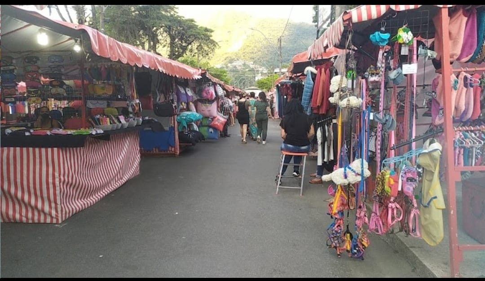
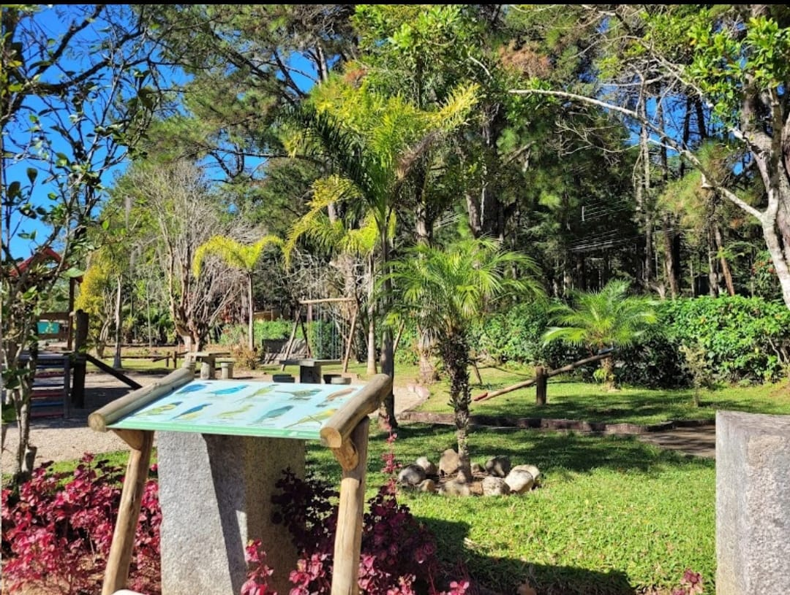

Fonte Judith
Uma fonte de água natural localizada no Bairro do Feirinha-alto-Teresópolis.

Feirinha do Alto
Descubra o encanto da Feirinha do Alto Teresópolis, um universo de produtos artesanais, culinária regional e apresentações artísticas. Saboreie os aromas e delícias da Feirinha do Alto Teresópolis, um paraíso para os amantes da gastronomia.

Horto Municipal
Lugar de verde e sossego.